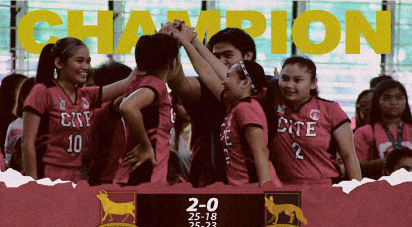

After three years of finishing behind the enemy's shadow, the CITE Lady Oxen trampled down the defending champions, CBEAM Lady Foxes, during the women’s volleyball finals held at the Sports Complex yesterday, Oct 20. Both competitors fought valiantly during the first wave as the Lady Oxen and Lady Foxes exchanged fiery attacks, giving each side a point after a point, 18-18.
However, the tides of the battle changed as Oxen Kathrina De Los Reyes fired off two consecutive spikes which rattled the defense on the other side of the court, 24-18. Showing no mercy, CITE’s Kloie Fernandez pummeled down the ball to the opposite side of their court which finished the first hurdle of the game, 25-18. On the second set, CBEAM reinforced their defense by covering up openings on their back side which made it hard for the charging Oxen to bust through, causing themselves to stumble and commit errors. This gave points for the sly Foxes, resulting in a single point deficit, 16-15.
However, strength overcame wits as spiking tandem Jules Andaya and Richelle Medina of CITE unleashed powerful kills. They dismantled the Yellow Foxes’ defense, finishing off the bout and claiming themselves the long awaited crown, 25-23. “Nagtiwala ako sa [bawat] players, at sabi ko makinig lang sila sa instructions ko at makukuha nila itong championship na ito,” said Lady Oxen acting coach, Charles Lajara. Andaya, the Oxen Team Captain, also shared that winning for CITE had always been their motivation.
Lagi naming motivation na umabot [sa] championship [round] at makapag-uwi ng championship [title] para sa CITE. Dati kasi [ay] third lang [ang] nakuha namin para sa CITE, ngayon championship [title] naman,
she said. Meanwhile, CEAS Blue Owls earned the third spot after defeating the CIHTM-CON tandem.

Red Oxen Snatch Women’s Volleyball Championship Crown
Written by on